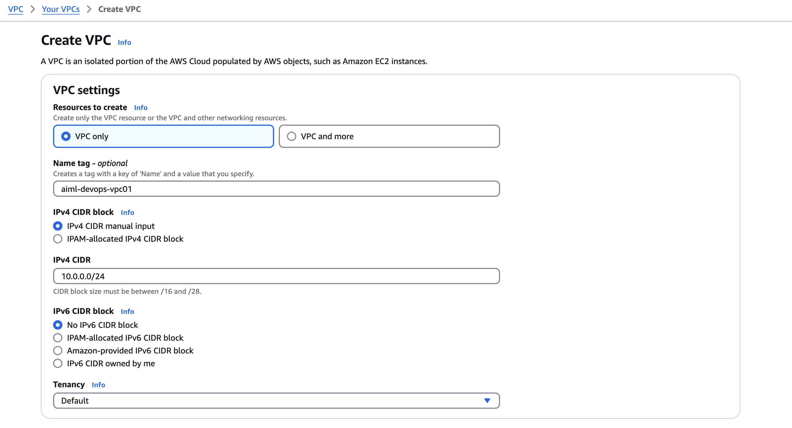

1. Set Up VPC with Private Subnets#
- Create a VPC with public and private subnets.
- Private Subnet: This subnet will host the EKS nodes and won't have direct access to the internet.
- Public Subnet: This subnet will have a NAT Gateway that allows the EKS nodes to access the internet indirectly.
1. Create a VPC#


2. Create Subnet(Private & Public)#
Private Subnet:
Public Subnet:


2. Create NAT Gateway#
- Elastic IP: First, allocate an Elastic IP (EIP) for the NAT Gateway.
- NAT Gateway: Create a NAT Gateway in the public subnet using the EIP. This will allow instances in the private subnet to access the internet.
Elastic IP:

NAT Gateway:
3. Configure Route Tables#
- Public Route Table: Ensure the public subnet route table has a route for 0.0.0.0/0 pointing to the Internet Gateway.
- Private Route Table: For private subnets, configure the route table to route traffic for 0.0.0.0/0 to the NAT Gateway. - - This enables EKS nodes in private subnets to access the internet for updates, pulling container images, etc.
Internet gateways:

Public Route Table:
Private Route Table:


4. Set Up EKS Cluster in Private Subnets#
- When creating your EKS cluster, make sure to select the private subnets for your worker nodes.
- Ensure that the EKS nodes are configured to communicate with the NAT Gateway by routing their internet-bound traffic through the private subnet route table.
Amazon Elastic Kubernetes Service#
Create EKS cluster#


7. Security Group Configuration#
- Ensure that the security groups attached to your EKS worker nodes allow outbound traffic to the internet (through the - NAT Gateway) and inbound traffic from your application services.
Add-ons#
- kube-proxy
- CoreDNS
- Metrics Server
- Amazon VPC CNI
- Prometheus Node Exporter
- Amazon EBS CSI Driver
- Mountpoint for Amazon S3 CSI Driver
eks-worker-node-policy

Installing the NVIDIA GPU Operator#
-
Add the NVIDIA Helm repository:
-
Install the GPU Operator.
helm install --wait --generate-name \
-n gpu-operator --create-namespace \
nvidia/gpu-operator \
--version=v25.3.0
✅ Verify NVIDIA Plugin Installed#
Check the NVIDIA device plugin DaemonSet:
- You should see:
gpu-feature-discovery 1 1 1 1 1 nvidia.com/gpu.deploy.gpu-feature-discovery=true 12m
nvidia-container-toolkit-daemonset 1 1 1 1 1 nvidia.com/gpu.deploy.container-toolkit=true 12m
nvidia-dcgm-exporter 1 1 1 1 1 nvidia.com/gpu.deploy.dcgm-exporter=true 12m
nvidia-device-plugin-daemonset 1 1 1 1 1 nvidia.com/gpu.deploy.device-plugin=true 12m
nvidia-device-plugin-mps-control-daemon 0 0 0 0 0 nvidia.com/gpu.deploy.device-plugin=true,nvidia.com/mps.capable=true 12m
nvidia-driver-daemonset 0 0 0 0 0 nvidia.com/gpu.deploy.driver=true 12m
nvidia-mig-manager 0 0 0 0 0 nvidia.com/gpu.deploy.mig-manager=true 12m
nvidia-operator-validator 1 1 1 1 1 nvidia.com/gpu.deploy.operator-validator=true 12m
- Install it (if not present):
kubectl apply -f https://raw.githubusercontent.com/NVIDIA/k8s-device-plugin/v0.14.1/nvidia-device-plugin.yml
ganeshkinkargiri.@M7QJY5-A67EFC4A ~ % kubectl apply -f https://raw.githubusercontent.com/NVIDIA/k8s-device-plugin/v0.14.1/nvidia-device-plugin.yml
daemonset.apps/nvidia-device-plugin-daemonset created
ganeshkinkargiri.@M7QJY5-A67EFC4A ~ %
ganeshkinkargiri.@M7QJY5-A67EFC4A ~ % kubectl get pod -A
NAMESPACE NAME READY STATUS RESTARTS AGE
kube-system aws-node-frfnv 2/2 Running 0 10h
kube-system aws-node-hx576 2/2 Running 0 19m
kube-system coredns-6799d65cb-n6jbt 1/1 Running 0 9h
kube-system coredns-6799d65cb-tw92r 1/1 Running 0 10h
kube-system kube-proxy-n5w89 1/1 Running 0 10h
kube-system kube-proxy-ww9cm 1/1 Running 0 19m
kube-system metrics-server-5c998cf5dc-hrlc9 1/1 Running 0 9h
kube-system metrics-server-5c998cf5dc-t5d5d 1/1 Running 0 10h
kube-system nvidia-device-plugin-daemonset-tcmzw 1/1 Running 0 12s
ganeshkinkargiri.@M7QJY5-A67EFC4A ~ %
ganeshkinkargiri.@M7QJY5-A67EFC4A ~ % kubectl get daemonset -n kube-system | grep nvidia
nvidia-device-plugin-daemonset 1 1 1 1 1 <none> 63s
ganeshkinkargiri.@M7QJY5-A67EFC4A ~ %
Create Namespace#
ganeshkinkargiri.@M7QJY5-A67EFC4A ~ % kubectl create namespace nvidia-gpu-smi
namespace/nvidia-gpu-smi created
ganeshkinkargiri.@M7QJY5-A67EFC4A ~ %
apiVersion: v1
kind: Pod
metadata:
name: nvidia-smi
namespace: gpu-test
spec:
restartPolicy: Never
containers:
- name: nvidia
image: nvidia/cuda:12.2.0-base-ubuntu20.04
command: ["nvidia-smi"]
resources:
limits:
nvidia.com/gpu: 1
ganeshkinkargiri.@M7QJY5-A67EFC4A ~ % kubectl apply -f nvidia-gpu-test.yaml
pod/gpu-check created
ganeshkinkargiri.@M7QJY5-A67EFC4A ~ %
ganeshkinkargiri.@M7QJY5-A67EFC4A ~ % kubectl -n nvidia-gpu-smi get pod
NAME READY STATUS RESTARTS AGE
nvidia-smi 0/1 Completed 0 43s
ganeshkinkargiri.@M7QJY5-A67EFC4A ~ %
ganeshkinkargiri.@M7QJY5-A67EFC4A ~ % kubectl logs -n nvidia-gpu-smi nvidia-smi
Fri Apr 18 06:37:40 2025
+-----------------------------------------------------------------------------------------+ | Processes: | | GPU GI CI PID Type Process name GPU Memory | | ID ID Usage | |=========================================================================================| | No running processes found | +-----------------------------------------------------------------------------------------+
NVIDIA GPU Driver already installed with Amazon AMI#
- Run this to confirm GPU driver:
- nvidia-smi
+-----------------------------------------------------------------------------------------+ | NVIDIA-SMI 550.144.03 Driver Version: 550.144.03 CUDA Version: 12.4 | |-----------------------------------------+------------------------+----------------------+
✅ Step 2: Install NVIDIA GPU Operator via Helm (Recommended)#
You’ll deploy the NVIDIA GPU Operator, which automatically handles driver/toolkit/monitoring inside Kubernetes.
🛠️ 1. Create the gpu-operator namespace#
ganeshkinkargiri.@M7QJY5-A67EFC4A ~ % kubectl create namespace gpu-operator
namespace/gpu-operator created
ganeshkinkargiri.@M7QJY5-A67EFC4A ~ %
🛠️ 2. Add NVIDIA Helm repo#
ganeshkinkargiri.@M7QJY5-A67EFC4A ~ helm repo add nvidia https://nvidia.github.io/gpu-operator
"nvidia" has been added to your repositories
ganeshkinkargiri.@M7QJY5-A67EFC4A ~ %
ganeshkinkargiri.@M7QJY5-A67EFC4A ~ % helm repo update
Hang tight while we grab the latest from your chart repositories...
...Successfully got an update from the "nvidia" chart repository
Update Complete. ⎈Happy Helming!⎈
ganeshkinkargiri.@M7QJY5-A67EFC4A ~ %
ganeshkinkargiri.@M7QJY5-A67EFC4A ~ % helm install --wait --generate-name \
-n gpu-operator \
nvidia/gpu-operator
W0418 12:22:46.210733 42738 warnings.go:70] spec.template.spec.affinity.nodeAffinity.preferredDuringSchedulingIgnoredDuringExecution[0].preference.matchExpressions[0].key: node-role.kubernetes.io/master is use "node-role.kubernetes.io/control-plane" instead
W0418 12:22:46.215110 42738 warnings.go:70] spec.template.spec.affinity.nodeAffinity.preferredDuringSchedulingIgnoredDuringExecution[0].preference.matchExpressions[0].key: node-role.kubernetes.io/master is use "node-role.kubernetes.io/control-plane" instead
NAME: gpu-operator-1744959159
LAST DEPLOYED: Fri Apr 18 12:22:42 2025
NAMESPACE: gpu-operator
STATUS: deployed
REVISION: 1
TEST SUITE: None
ganeshkinkargiri.@M7QJY5-A67EFC4A ~ %
ganeshkinkargiri.@M7QJY5-A67EFC4A ~ % kubectl -n gpu-operator get pod
NAME READY STATUS RESTARTS AGE
gpu-feature-discovery-jkjlt 1/1 Running 0 15m
gpu-operator-1744959159-node-feature-discovery-gc-656c869cpktzs 1/1 Running 0 15m
gpu-operator-1744959159-node-feature-discovery-master-79f87fxj4 1/1 Running 0 15m
gpu-operator-1744959159-node-feature-discovery-worker-kfw2t 1/1 Running 0 15m
gpu-operator-1744959159-node-feature-discovery-worker-vj94m 1/1 Running 0 15m
gpu-operator-85746cf4fc-gclqb 1/1 Running 0 15m
nvidia-container-toolkit-daemonset-r5vmj 1/1 Running 0 15m
nvidia-cuda-validator-4zwr6 0/1 Completed 0 15m
nvidia-dcgm-exporter-pvlsj 1/1 Running 0 15m
nvidia-device-plugin-daemonset-m9bk5 1/1 Running 0 15m
nvidia-operator-validator-hgq8r 1/1 Running 0 15m
ganeshkinkargiri.@M7QJY5-A67EFC4A ~ %
kubectl port-forward nvidia-dcgm-exporter-pvlsj 9400:9400 -n gpu-operator
curl http://localhost:9400/metrics
Monitoring GPUs in Kubernetes with DCGM#
NVIDIA DCGM#
NVIDIA DCGM is a set of tools for managing and monitoring NVIDIA GPUs in large-scale, Linux-based cluster environments.
DCGM includes APIs for gathering GPU telemetry. Of particular interest are GPU utilization metrics (for monitoring Tensor Cores, FP64 units, and so on), memory metrics, and interconnect traffic metrics.
DCGM exporter#
Monitoring stacks usually consist of a collector, a time-series database to store metrics, and a visualization layer. A popular open-source stack is Prometheus, used along with Grafana as the visualization tool to create rich dashboards. Prometheus also includes Alertmanager to create and manage alerts. Prometheus is deployed along with kube-state-metrics and node_exporter to expose cluster-level metrics for Kubernetes API objects and node-level metrics such as CPU utilization. Figure 1 shows a sample architecture of Prometheus.

Per-pod GPU metrics in a Kubernetes cluster#
dcgm-exporter collects metrics for all available GPUs on a node. However, in Kubernetes, you might not necessarily know which GPUs in a node would be assigned to a pod when it requests GPU resources. Starting in v1.13, kubelet has added a device monitoring feature that lets you find out the assigned devices to the pod—pod name, pod namespace, and device ID—using a pod-resources socket.
The http server in dcgm-exporter connects to the kubelet pod-resources server (/var/lib/kubelet/pod-resources) to identify the GPU devices running on a pod and appends the GPU devices pod information to the metrics collected.

Here are some examples of setting up dcgm-exporter. If you use the NVIDIA GPU Operator, then dcgm-exporter is one of the components deployed as part of the operator.
$ helm repo add prometheus-community \
https://prometheus-community.github.io/helm-charts
$ helm repo update
$ helm inspect values prometheus-community/kube-prometheus-stack > /tmp/kube-prometheus-stack.values
# Edit /tmp/kube-prometheus-stack.values in your favorite editor
# according to the documentation
# This exposes the service via NodePort so that Prometheus/Grafana
# are accessible outside the cluster with a browser
$ helm install prometheus-community/kube-prometheus-stack \
--create-namespace --namespace prometheus \
--generate-name \
--set prometheus.service.type=NodePort \
--set prometheus.prometheusSpec.serviceMonitorSelectorNilUsesHelmValues=false
Installing dcgm-exporter#
Here’s how to get started installing dcgm-exporter to monitor GPU performance and utilization. You use the Helm chart for setting up dcgm-exporter. First, add the Helm repo:
Then, install the chart using Helm:
Using the Grafana service exposed at port 32032, access the Grafana homepage. Log in to the dashboard using the credentials available in the Prometheus chart: the adminPassword field in prometheus.values.
To now start a Grafana dashboard for GPU metrics, import the reference NVIDIA dashboard from Grafana Dashboards.
Using the DCGM dashboard#
http://127.0.0.1:32032
- Login to Graphana
-
User: admin, credentials available in the Prometheus chart: the adminPassword field in prometheus.values. adminUser: admin adminPassword: prom-xxxxxxx
-
Click Dashboard
- New...
- Import

use this URL: https://grafana.com/grafana/dashboards/12239-nvidia-dcgm-exporter-dashboard/

Select Prometheus and finally Load

NAMESPACE NAME READY STATUS RESTARTS AGE
default grafana-74d4987685-cnrth 1/1 Running 0 6h33m
gpu-operator gpu-feature-discovery-jkjlt 1/1 Running 0 7h29m
gpu-operator gpu-operator-1744959159-node-feature-discovery-gc-656c869cpktzs 1/1 Running 0 7h29m
gpu-operator gpu-operator-1744959159-node-feature-discovery-master-79f87fxj4 1/1 Running 0 7h29m
gpu-operator gpu-operator-1744959159-node-feature-discovery-worker-kfw2t 1/1 Running 0 7h29m
gpu-operator gpu-operator-1744959159-node-feature-discovery-worker-vj94m 1/1 Running 0 7h29m
gpu-operator gpu-operator-85746cf4fc-gclqb 1/1 Running 0 7h29m
gpu-operator nvidia-container-toolkit-daemonset-r5vmj 1/1 Running 0 7h29m
gpu-operator nvidia-cuda-validator-4zwr6 0/1 Completed 0 7h28m
gpu-operator nvidia-dcgm-exporter-pvlsj 1/1 Running 0 7h29m
gpu-operator nvidia-device-plugin-daemonset-m9bk5 1/1 Running 0 7h29m
gpu-operator nvidia-operator-validator-hgq8r 1/1 Running 0 7h29m
kube-system aws-node-frfnv 2/2 Running 0 18h
kube-system aws-node-hx576 2/2 Running 0 8h
kube-system coredns-6799d65cb-n6jbt 1/1 Running 0 18h
kube-system coredns-6799d65cb-tw92r 1/1 Running 0 18h
kube-system ebs-csi-controller-7bdbc84dfb-hg2x7 6/6 Running 0 5h58m
kube-system ebs-csi-controller-7bdbc84dfb-n9jbg 6/6 Running 0 5h58m
kube-system ebs-csi-node-jblfb 3/3 Running 0 5h58m
kube-system ebs-csi-node-qhdjs 3/3 Running 0 5h58m
kube-system kube-proxy-n5w89 1/1 Running 0 18h
kube-system kube-proxy-ww9cm 1/1 Running 0 8h
kube-system metrics-server-5c998cf5dc-hrlc9 1/1 Running 0 18h
kube-system metrics-server-5c998cf5dc-t5d5d 1/1 Running 0 18h
kube-system nvidia-device-plugin-daemonset-jhgpn 1/1 Running 0 7h47m
kube-system nvidia-device-plugin-daemonset-tcmzw 1/1 Running 0 8h
kube-system s3-csi-node-9fnkm 3/3 Running 0 5h58m
kube-system s3-csi-node-m8xn4 3/3 Running 0 5h58m
nvidia-gpu-smi nvidia-smi 0/1 Completed 0 7h44m
prometheus alertmanager-kube-prometheus-stack-1744-alertmanager-0 2/2 Running 0 140m
prometheus kube-prometheus-stack-1744-operator-57fb44cf74-9dtwj 1/1 Running 0 140m
prometheus kube-prometheus-stack-1744977651-grafana-5988f98874-bb4xd 3/3 Running 0 140m
prometheus kube-prometheus-stack-1744977651-kube-state-metrics-6db49d8w5zm 1/1 Running 0 140m
prometheus kube-prometheus-stack-1744977651-prometheus-node-exporter-7b48v 1/1 Running 0 140m
prometheus kube-prometheus-stack-1744977651-prometheus-node-exporter-wgv5s 1/1 Running 0 140m
prometheus prometheus-kube-prometheus-stack-1744-prometheus-0 2/2 Running 0 140m
ganeshkinkargiri.@M7QJY5-A67EFC4A ~ %
ganeshkinkargiri.@M7QJY5-A67EFC4A ~ % kubectl taint nodes ip-10-0-150-130.ap-south-1.compute.internal nvidia.com/gpu-only=true:NoSchedule node/ip-10-0-150-130.ap-south-1.compute.internal tainted ganeshkinkargiri.@M7QJY5-A67EFC4A ~ %
Reference Linking#
Others#
ganeshkinkargiri.@M7QJY5-A67EFC4A ~ % helm repo add grafana https://grafana.github.io/helm-charts "grafana" has been added to your repositories ganeshkinkargiri.@M7QJY5-A67EFC4A ~ % helm repo update Hang tight while we grab the latest from your chart repositories... ...Successfully got an update from the "nvidia" chart repository ...Successfully got an update from the "grafana" chart repository Update Complete. ⎈Happy Helming!⎈ ganeshkinkargiri.@M7QJY5-A67EFC4A ~ % ganeshkinkargiri.@M7QJY5-A67EFC4A ~ % ganeshkinkargiri.@M7QJY5-A67EFC4A ~ % helm install grafana grafana/grafana NAME: grafana LAST DEPLOYED: Fri Apr 18 13:18:51 2025 NAMESPACE: default STATUS: deployed REVISION: 1 NOTES: 1. Get your 'admin' user password by running:
kubectl get secret --namespace default grafana -o jsonpath="{.data.admin-password}" | base64 --decode ; echo
- The Grafana server can be accessed via port 80 on the following DNS name from within your cluster:
grafana.default.svc.cluster.local
Get the Grafana URL to visit by running these commands in the same shell: export POD_NAME=$(kubectl get pods --namespace default -l "app.kubernetes.io/name=grafana,app.kubernetes.io/instance=grafana" -o jsonpath="{.items[0].metadata.name}") kubectl --namespace default port-forward $POD_NAME 3000
- Login with the password from step 1 and the username: admin
#
WARNING: Persistence is disabled!!! You will lose your data when#
the Grafana pod is terminated.#
#
ganeshkinkargiri.@M7QJY5-A67EFC4A ~ % export POD_NAME=$(kubectl get pods --namespace default -l "app.kubernetes.io/name=grafana,app.kubernetes.io/instance=grafana" -o jsonpath="{.items[0].metadata.name}") ganeshkinkargiri.@M7QJY5-A67EFC4A ~ % ganeshkinkargiri.@M7QJY5-A67EFC4A ~ % kubectl --namespace default port-forward $POD_NAME 3000 Forwarding from 127.0.0.1:3000 -> 3000 Forwarding from [::1]:3000 -> 3000
user: admin
ganeshkinkargiri.@M7QJY5-A67EFC4A ~ % kubectl get secret --namespace default grafana -o jsonpath="{.data.admin-password}" | base64 --decode ; echo
JzLpeQTU3knXiqyXLYQ3FfL3udgbeMZ8ZMPWvzLF ganeshkinkargiri.@M7QJY5-A67EFC4A ~ %
ganeshkinkargiri.@M7QJY5-A67EFC4A ~ % kubectl create namespace prometheus namespace/prometheus created ganeshkinkargiri.@M7QJY5-A67EFC4A ~ % helm repo add prometheus-community https://prometheus-community.github.io/helm-charts "prometheus-community" has been added to your repositories ganeshkinkargiri.@M7QJY5-A67EFC4A ~ %
ganeshkinkargiri.@M7QJY5-A67EFC4A ~ % helm upgrade -i prometheus prometheus-community/prometheus \ --namespace prometheus \ --set alertmanager.persistence.storageClass="gp2" \ --set server.persistentVolume.storageClass="gp2" Release "prometheus" does not exist. Installing it now. NAME: prometheus LAST DEPLOYED: Fri Apr 18 13:37:07 2025 NAMESPACE: prometheus STATUS: deployed REVISION: 1 TEST SUITE: None NOTES: The Prometheus server can be accessed via port 80 on the following DNS name from within your cluster: prometheus-server.prometheus.svc.cluster.local
Get the Prometheus server URL by running these commands in the same shell: export POD_NAME=$(kubectl get pods --namespace prometheus -l "app.kubernetes.io/name=prometheus,app.kubernetes.io/instance=prometheus" -o jsonpath="{.items[0].metadata.name}") kubectl --namespace prometheus port-forward $POD_NAME 9090
The Prometheus alertmanager can be accessed via port 9093 on the following DNS name from within your cluster: prometheus-alertmanager.prometheus.svc.cluster.local
Get the Alertmanager URL by running these commands in the same shell: export POD_NAME=$(kubectl get pods --namespace prometheus -l "app.kubernetes.io/name=alertmanager,app.kubernetes.io/instance=prometheus" -o jsonpath="{.items[0].metadata.name}") kubectl --namespace prometheus port-forward $POD_NAME 9093
#
WARNING: Pod Security Policy has been disabled by default since#
it deprecated after k8s 1.25+. use#
(index .Values "prometheus-node-exporter" "rbac"#
. "pspEnabled") with (index .Values#
"prometheus-node-exporter" "rbac" "pspAnnotations")#
in case you still need it.#
#
The Prometheus PushGateway can be accessed via port 9091 on the following DNS name from within your cluster: prometheus-prometheus-pushgateway.prometheus.svc.cluster.local
Get the PushGateway URL by running these commands in the same shell: export POD_NAME=$(kubectl get pods --namespace prometheus -l "app=prometheus-pushgateway,component=pushgateway" -o jsonpath="{.items[0].metadata.name}") kubectl --namespace prometheus port-forward $POD_NAME 9091
For more information on running Prometheus, visit: https://prometheus.io/ ganeshkinkargiri.@M7QJY5-A67EFC4A ~ %
ganeshkinkargiri.@M7QJY5-A67EFC4A ~ % kubectl get pods -n kube-system -l app=ebs-csi-controller
NAME READY STATUS RESTARTS AGE ebs-csi-controller-7bdbc84dfb-hg2x7 6/6 Running 0 5m44s ebs-csi-controller-7bdbc84dfb-n9jbg 6/6 Running 0 5m44s ganeshkinkargiri.@M7QJY5-A67EFC4A ~ %
ganeshkinkargiri.@M7QJY5-A67EFC4A ~ % kubectl get storageclass
NAME PROVISIONER RECLAIMPOLICY VOLUMEBINDINGMODE ALLOWVOLUMEEXPANSION AGE gp2 kubernetes.io/aws-ebs Delete WaitForFirstConsumer false 3d2h ganeshkinkargiri.@M7QJY5-A67EFC4A ~ %
ganeshkinkargiri.@M7QJY5-A67EFC4A ~ % kubectl get pvc -n prometheus
NAME STATUS VOLUME CAPACITY ACCESS MODES STORAGECLASS VOLUMEATTRIBUTESCLASS AGE
prometheus-server Pending gp2
Trobule shhot#
ganeshkinkargiri.@M7QJY5-A67EFC4A ~ % kubectl describe node ip-10-0-153-26.ap-south-1.compute.internal | grep -i allocatable Allocatable: Normal NodeAllocatableEnforced 60m kubelet Updated Node Allocatable limit across pods Normal NodeAllocatableEnforced 58m kubelet Updated Node Allocatable limit across pods Normal NodeAllocatableEnforced 27m kubelet Updated Node Allocatable limit across pods ganeshkinkargiri.@M7QJY5-A67EFC4A ~ %
ganeshkinkargiri.@M7QJY5-A67EFC4A ~ % kubectl get nodes -o wide
NAME STATUS ROLES AGE VERSION INTERNAL-IP EXTERNAL-IP OS-IMAGE KERNEL-VERSION CONTAINER-RUNTIME
ip-10-0-133-51.ap-south-1.compute.internal Ready
ganeshkinkargiri.@M7QJY5-A67EFC4A ~ % kubectl describe node ip-10-0-153-26.ap-south-1.compute.internal | grep -A5 "Allocatable"
Allocatable: cpu: 7910m ephemeral-storage: 95551679124 hugepages-1Gi: 0 hugepages-2Mi: 0 memory: 31482280Ki -- Normal NodeAllocatableEnforced 60m kubelet Updated Node Allocatable limit across pods Normal NodeHasSufficientMemory 60m kubelet Node ip-10-0-153-26.ap-south-1.compute.internal status is now: NodeHasSufficientMemory Normal NodeHasNoDiskPressure 60m kubelet Node ip-10-0-153-26.ap-south-1.compute.internal status is now: NodeHasNoDiskPressure Normal NodeHasSufficientPID 60m kubelet Node ip-10-0-153-26.ap-south-1.compute.internal status is now: NodeHasSufficientPID Normal Starting 29m kubelet Starting kubelet. Warning CgroupV1 29m kubelet cgroup v1 support is in maintenance mode, please migrate to cgroup v2 -- Normal NodeAllocatableEnforced 29m kubelet Updated Node Allocatable limit across pods Normal NodeHasSufficientMemory 29m kubelet Node ip-10-0-153-26.ap-south-1.compute.internal status is now: NodeHasSufficientMemory Normal NodeHasNoDiskPressure 29m kubelet Node ip-10-0-153-26.ap-south-1.compute.internal status is now: NodeHasNoDiskPressure Normal NodeHasSufficientPID 29m kubelet Node ip-10-0-153-26.ap-south-1.compute.internal status is now: NodeHasSufficientPID ganeshkinkargiri.@M7QJY5-A67EFC4A ~ %
ganeshkinkargiri.@M7QJY5-A67EFC4A ~ % kubectl describe node ip-10-0-153-26.ap-south-1.compute.internal | grep nvidia.com/gpu
nvidia.com/gpu-driver-upgrade-state=upgrade-done
nvidia.com/gpu.compute.major=8
nvidia.com/gpu.compute.minor=6
nvidia.com/gpu.count=1
nvidia.com/gpu.deploy.container-toolkit=true
nvidia.com/gpu.deploy.dcgm=true
nvidia.com/gpu.deploy.dcgm-exporter=true
nvidia.com/gpu.deploy.device-plugin=true
nvidia.com/gpu.deploy.driver=pre-installed
nvidia.com/gpu.deploy.gpu-feature-discovery=true
nvidia.com/gpu.deploy.node-status-exporter=true
nvidia.com/gpu.deploy.operator-validator=true
nvidia.com/gpu.family=ampere
nvidia.com/gpu.machine=g5.2xlarge
nvidia.com/gpu.memory=23028
nvidia.com/gpu.mode=compute
nvidia.com/gpu.present=true
nvidia.com/gpu.product=NVIDIA-A10G
nvidia.com/gpu.replicas=1
nvidia.com/gpu.sharing-strategy=none
nvidia.com/gpu-driver-upgrade-enabled: true
nvidia.com/gpu: 0 nvidia.com/gpu: 0 nvidia.com/gpu 0 0 ganeshkinkargiri.@M7QJY5-A67EFC4A ~ %
Thanks — this confirms the root cause:
⚠️ nvidia.com/gpu: 0 in both Capacity and Allocatable
Even though the node has a GPU installed (you can see all the nvidia.com/gpu.* labels), Kubernetes does not recognize it as available for scheduling.
🎯 What's going wrong? You have the GPU driver installed, and the nvidia-device-plugin is probably not working as expected, or the GPU is not visible to the container runtime (containerd).